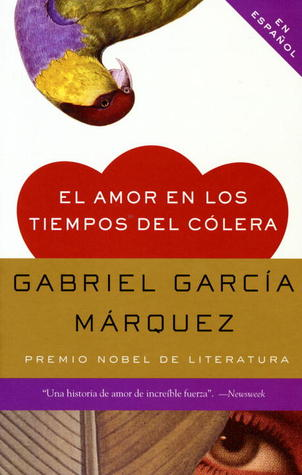

El amor en los tiempos del cólera
Reseña por Jorge I. Zuluaga

Ver reseña en GoodReads (necesita cuenta)
Me da pesar que el tiempo haya pasado desde su apogeo y que se haya convertido en un clásico del que nadie más habla. ¡Deberíamos hablar más de ella!
Si bien la novela que consagró a García Márquez como un genio literario de la talla de Tolstói o Victor Hugo fue la inolvidable "Cien años de soledad", en la que floreció sin parangón el género inventado por el mismo García Márquez, el realismo mágico, en "El amor en los tiempos del cólera" Gabo nos regala una historia de amor que, estoy seguro, tiene pocos paralelos en la literatura —como decimos en redes, no tengo pruebas, pero tampoco dudas—, con algunos visos medio fantásticos, muy garcíamarquianos, pero también con los pies en la tierra.
La novela tiene un aire de Ana Karenina que no me pude quitar por muchos párrafos. Es posible que me equivoque de "gabo" a rabo, pero como estoy hablando de una emoción y no de un juicio literario académico, ahí les dejo esa impresión que me quedó.
No sé qué me gustó más y aprovecho para contarles las características de "El amor en los tiempos del cólera" que hacen de esta una novela magnífica —¿se me estará yendo la mano en los superlativos?—.
No sé si fueron los personajes femeninos y sus increíbles historias en la novela; especialmente las historias de emancipación, de libertad sexual, de poder sin sexo, de amistad incondicional. Siempre he pensado —a veces también por puro prejuicio— que García Márquez trata los temas femeninos en sus obras desde una perspectiva muy patriarcal, androcéntrica y estereotipada —dentro de lo que se pueda usar este término en la creativa obra de García Márquez—. Pero las mujeres de esta obra me asombraron genuinamente. Las críticas abiertas a la institución del matrimonio, la discusión implícita sobre la libertad sexual y el placer de las mujeres, del que gozan sin tapujos camanduleros en esta novela —y estamos hablando de que buena parte se desarrolla en la Colombia católica del siglo XIX—, la existencia de al menos una amistad genuina en la novela entre un hombre y una mujer que nunca llega al sexo —y no, no es la que existe entre Florentino y Fermina—. Todo. ¡Me encantó! Claro que entenderán que es un juicio que hago como hombre del patriarcado. Pero mis lecturas recientes en temas de feminismos —estoy en proceso de educación— me permitieron identificar en estas historias algunas de las reivindicaciones que han pedido históricamente las mujeres.
Tampoco sé si lo que más me gustó fue la prosa asombrosa, lírica y envolvente de García Márquez. ¡Qué uso tan fantástico de la lengua! Ahora entiendo por qué se lo compara con los autores y autoras del Siglo de Oro; comprendo mejor por qué se habla de él como un Cervantes contemporáneo, una afirmación que siempre pensé que era una exageración de groupies —¿o me estaré convirtiendo en uno de ellos?—.
Tal vez lo que más me gustó fue el final.
¿Cómo hablarles del final —me refiero a los últimos capítulos— en una reseña que no quiere arruinarles la sorpresa? Solo puedo decirles que no soy un lector aficionado a las historias de amor, ni verídicas, ni imaginarias —un defecto que viene seguramente de mi machismo estructural—. Pero la historia de amor de "El amor en los tiempos del cólera" me ha resultado simplemente cautivadora. Solo puedo darles una pista que espero olviden al terminar la reseña —si es que han llegado tan lejos en esta pastoral—: el amor y el sexo en la vejez. Qué bien tratado está este tema en el libro. No soy todavía un anciano —tengo 48 años—, pero cada vez soy más sensible a este tema por mi edad. Lo que García Márquez presenta en este libro me da esperanzas de encontrar en los últimos años emociones que no se experimentan durante la edad del sexo y de la descendencia.
El libro es, además, prácticamente una obra de historiografía; es casi una novela histórica que nos transporta ora al París del siglo XIX, ora a las guerras civiles del cambio de siglo en Colombia. En una página estás montado en los primeros vapores que recorrieron el Magdalena y unas páginas más allá encuentras la visión de los primeros cruceros con todas las comodidades que ascendían por este río desde el Atlántico hasta la ribera de los Andes. Pero claro, no es una novela histórica convencional. Si hay dos veces en toda la obra en la que se menciona una fecha, no hay tres. Sin embargo, tiene suficientes referencias para ubicar en el tiempo casi todas las acciones y eventos que describe la obra. Viajé en el tiempo con esta obra y me gustó mucho.
Quedé enamorado de Fermina, de Leona, del tío León XII, de un gigante capitán de barco, del doctor Urbino —el júnior— y hasta de quien fue por la mayor parte de la historia Florentino Ariza. ¡Qué personajes tan complejos y entrañables ha creado García Márquez!
Vamos a lo negativo.
Les confieso que, al principio, me causó un poco de dificultad engancharme con la novela; incluso estuve a punto de abandonarla cuando no entendía un carajo —guiño, guiño—. Afortunadamente, sufro de una compulsión maniática a no abandonar ningún libro —solo lo he hecho en dos o tres casos y con muchos remordimientos—. Los saltos en el tiempo de "El amor en los tiempos del cólera", la "confusión" de hilos narrativos paralelos y el número de personajes que desfilan sin ninguna introducción hacen de esta una novela para leer con paciencia y cuidado. Sin embargo, la recompensa a la larga es tan grande que no hay duda de que el esfuerzo vale la pena.
Hay un lunar enorme en la novela que estoy seguro de que cualquier lector o lectora que la lea hoy va a detectar sin dificultades —ya me lo había advertido mi amiga Lina Sánchez—: la pedofilia de Florentino Ariza, el protagonista de la novela. Agradezco a Lina que no me haya dado más detalles, y espero que este comentario no arruine la sorpresa de nadie, pero sí les puedo decir que las páginas de la relación de Ariza con una niña de menos de 15 años son sencillamente detestables. Sé que muchas personas van a decir que el arte es así, que no puede dejar de reflejar realidades que nos resultan odiosas; pero la pedofilia es un fenómeno lamentablemente tan común y que ha producido tantos traumas a niños y a los adultos en los que se convierten, que hoy creo que a Gabo se le fue la mano. Repito, no quiero hacer ningún spoiler, pero afortunadamente este sombrío período de la vida de Ariza no es el grueso de la historia. De lo contrario, creo que no habría podido terminar la novela.
Qué bien se siente haber leído "El amor en los tiempos del cólera".
¿No la han leído? ¿Qué están esperando para empezarla?